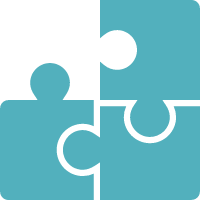

Xia Zhen
一只喜欢画画、会修图的程序员。
基本信息
夏振
21
浙江 嘉兴
15507319545
3450034600@qq.com
求职意向
Unity3D客户端开发

特长爱好
PS、CG绘画、摄影、乒乓球
教育背景
2016.9-2018.6 湖南科技职业学院 软件技术（游戏开发方向）
主修课程：C程序设计、Unity3D、cocos2d-x、Flash游戏开发
选修课程：html5、MySQL、SQL数据库、数据结构、游戏策划与设计、3DMAX、PS
专业技能
掌握语言：C/C++，C#，Lua，html，PHP，ActionScript 3.0
熟练软件：Visual Studio、Unity3d、PS、3DMAX、WPS三件套等。
项目经历
暂无正式上线项目经历，以下皆为个人开发的Demo版作品。
2D纵轴射击类手游《太空大战》、益智类手游《纪念碑谷》、休闲类手游《愤怒的小鸟》、休闲类手游《甜品消消乐》、休闲类手游《Flappy Bird>、对战类手游《双人坦克大战》等。
自我介绍
因为热爱游戏，所以大学选了这个专业，在校两年学习踏实积极，成绩位列全专业前茅，能独立开发完整的轻量级游戏，课余时间自学PS、游戏策划与设计、3D模型、游戏原画、游戏UI等与游戏开发相关的技能点。平时学习积极性高，善于沟通和交流，乐于分享，能吃苦耐劳，工作认真细致，勤奋好学，踏实肯干，学习能力和适应力强，善于在工作中分析和总结经验，能独立解决问题，勇于尝试新的事物和学习新的知识。